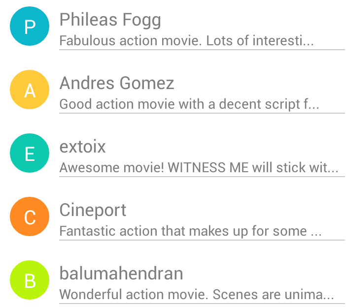

Material Colors
Bold, graphic, intentional.
Deliberate color choices, edge-to-edge imagery, large-scale typography, and intentional white space create a bold and graphic interface that immerse the user in the experience. -- Google
Of course, no Material Design is complete without Material Colors. This library offers rich and vibrant color palettes for Android and Java Apps. Usage is straightforward and both hex and rgb codes are available.
Code Sample
Load a palette based on already defined themes. For example:
MaterialTheme theme = MaterialTheme.get(Theme.SAHARA);Retrieve the Blue shade of this theme and set it to a View in your app:
ColorCode materialBlue = theme.getColor(MaterialColor.BLUE);
view.getBackground().setColorFilter(
Color.parseColor(materialBlue.hex),
PorterDuff.Mode.SRC
);Optionally, you can simply select the next shade of color in the current palette:
ColorCode materialColor = theme.getNextColor();Or, select the shade of color directly from color objects defined in material.color package:
import net.usrlib.material.color.Blue;
// Select Blue 500 hex value: #2196F3
String hexValue = Blue._500.hex;Screen Shot
The ListView below was created dynamically from a json array of movie reviews. Each icon's background color invokes theme.getNextColor() to move to the next color in the palette. This feature provides a visual language to the UI and vividly accentuates each list item.
Installation
Gradle
compile 'net.usrlib:material-color:0.1'Maven
<dependency>
<groupId>net.usrlib</groupId>
<artifactId>material-color</artifactId>
<version>0.1</version>
<type>pom</type>
</dependency>Ivy
<dependency org='net.usrlib' name='material-color' rev='0.1'>
<artifact name='$AID' ext='pom'></artifact>
</dependency>Version
0.1
Tech
Color codes are based on the Material Design Color Chart from HtmlColorCodes.com